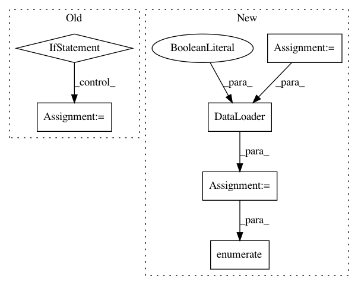

f4503bb3a3be014b452f54d8e2d187bb6419f627,autokeras/classifier.py,ImageClassifier,predict,#ImageClassifier#Any#,216
Before Change
Returns:
An numpy.ndarray containing the results.
if constant.LIMIT_MEMORY:
config = tf.ConfigProto()
config.gpu_options.allow_growth = True
sess = tf.Session(config=config)
init = tf.global_variables_initializer()
sess.run(init)
backend.set_session(sess)
x_test = x_test.astype("float32") / 255
model = self.load_searcher().load_best_model().produce_model()
return self.y_encoder.inverse_transform(model.predict(x_test, ))
After Change
if constant.LIMIT_MEMORY:
// TODO: limit pytorch memory.
pass
test_data = self.data_transformer.transform_test(x_test)
test_loader = DataLoader(test_data, batch_size=constant.MAX_BATCH_SIZE, shuffle=True)
model = self.load_searcher().load_best_model().produce_model()
model.eval()
outputs = []
with torch.no_grad():
for index, inputs in enumerate(test_loader):
outputs.append(model(inputs).numpy())
output = reduce(lambda x, y: np.concatenate((x, y)), outputs)
return self.y_encoder.inverse_transform(output)
In pattern: SUPERPATTERN
Frequency: 3
Non-data size: 6
Instances
Project Name: jhfjhfj1/autokeras
Commit Name: f4503bb3a3be014b452f54d8e2d187bb6419f627
Time: 2018-08-01
Author: jhfjhfj1@gmail.com
File Name: autokeras/classifier.py
Class Name: ImageClassifier
Method Name: predict
Project Name: pyprob/pyprob
Commit Name: 62b9b6ffdcba80685b7374b5d0e46d2c05873be7
Time: 2018-12-04
Author: atilimgunes.baydin@gmail.com
File Name: pyprob/nn/inference_network.py
Class Name: InferenceNetwork
Method Name: _pre_generate_layers